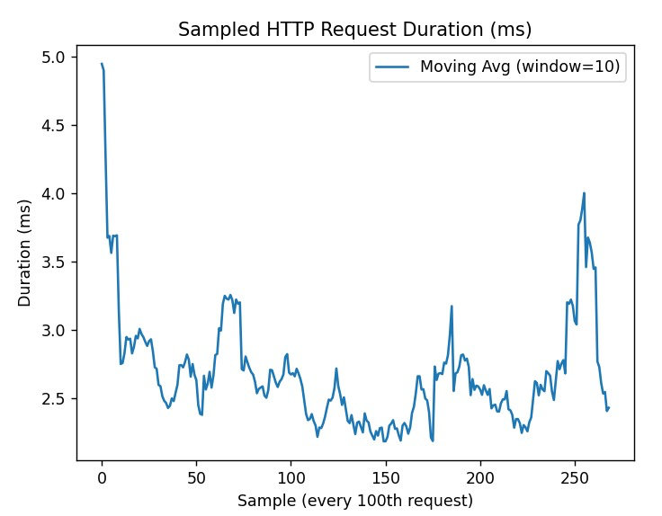

TUSSI
Distributed E-commerce Platform
üèóÔ∏è Architecture Deep Dive
Patterns, Tactics & Quality Scenarios
Team 1a - Software Architecture Project
Team 1a
Xamir Ernesto Rojas Gamboa
Juan Sebastian Medina Pinto
Juan Manuel Pérez Ordoñez
üèóÔ∏è ARCHITECTURAL STRUCTURE
Four Comprehensive Views
Navigate with ↓ to explore each view
Component & Connector View

System: 2 Clients + 1 Load Balancer + 4 Services + 3 Databases = 10 Components
Connected by: 10 Connectors (HTTPS, REST, TCP)
Components Breakdown
üåê Clients (2)
- Web Client (Next.js/React)
- Mobile Client (React Native)
⚖️ Load Balancer (1)
- Nginx with SSL Termination
- Round-robin distribution
üö™ Services (4)
- API Gateway (Node.js)
- Auth Service (FastAPI)
- Products API (FastAPI)
- Cart API (Node.js)
üóÑÔ∏è Databases (3)
- Auth DB (PostgreSQL:5432)
- Products DB (PostgreSQL:5433)
- Cart DB (MongoDB:27017)
üîó Connectors (10)
- c1: Web Client → Load Balancer (HTTPS)
- c2: Mobile Client → Load Balancer (HTTPS)
- c3: Load Balancer → API Gateway (HTTP)
- c4: API Gateway → Auth Service (REST)
- c5: API Gateway → Products API (REST)
- c6: API Gateway → Cart API (REST)
- c7: Auth Service → Auth DB (TCP)
- c8: Products API → Products DB (TCP)
- c9: Cart API → Cart DB (TCP)
- c10: K6 Testing → Load Balancer (HTTP)
Layered (Tier & Layer) View
| Tier 1: Presentation | Web Client (Next.js), Mobile Client (React Native) |
|---|---|
| Tier 2: Communication | API Gateway (Node.js/Express) - Centralized routing, JWT, rate limiting |
| Tier 3: Logic | L1: Controllers (Routing) | L2: Services (Business Logic) | L3: Models (Data Access) |
| Tier 4: Data | PostgreSQL (Auth + Products), MongoDB (Cart), Mobile Local Storage |
üéØ Separation of Concerns: Each tier has distinct responsibilities and interfaces
Deployment Structure

Container Orchestration Pattern
- Load Balancer (Nginx)
- Frontend Container
- API Gateway (4 replicas)
- K6 Load Testing
- Auth Service Container
- Products API Container
- Cart API Container
- All Database Containers
Decomposition Structure
üé® Presentation Module
- Web Client: Authentication, Product Discovery, Cart Management, Responsive UI
- Mobile Client: Authentication, Product Discovery, Cart Management, Offline Capabilities
üö™ Gateway Module
- Request Routing
- Authentication Middleware
- Rate Limiting & Security
- Centralized Logging
- Endpoint Aggregation
⚙️ Business Services
- Auth Service: User Management, Session Management
- Products Service: Product Catalog, CRUD Operations
- Cart Service: Cart Operations, Item Management
üóÑÔ∏è Data Persistence Module
Polyglot Persistence: PostgreSQL (Auth + Products) + MongoDB (Cart) + Mobile Storage
SECURITY SCENARIOS
Four Critical Security Threats
Navigate with ↓ to explore each scenario
üïµÔ∏è Man-in-the-Middle Attack
Stimulus: Attempt to intercept data in transit
Source: External attacker on insecure network
Artifact: Communication Channel (TLS/SSL)
Environment: User on public Wi-Fi
Response: Data travels encrypted, preventing unauthorized reading
Metric: 0% non-encrypted connections, automatic HTTPS upgrade
üö´ Attempt to Bypass API Gateway
Stimulus: Direct request to internal microservice
Source: External attacker with discovered internal IP
Artifact: Reverse Proxy (API Gateway)
Environment: Production with private network
Response: Gateway validates and routes; client never directly accesses service
Metric: Zero directly accessible internal service endpoints
üîí Network Segmentation: Private network isolates backend services completely
üíÄ Frontend Compromised
Stimulus: Attempt lateral movement to database
Source: Attacker in compromised frontend container
Artifact: Docker Networks (public and private)
Environment: Production Docker deployment
Response: Docker network rules block traffic between isolated networks
Metric: Zero connectivity between frontend and database networks
üèóÔ∏è Blast Radius Containment: Frontend compromise cannot reach databases
üïµÔ∏è‚Äç‚ôÇÔ∏è Product Modification for Fraud (Auditability)
Stimulus: Secret price modification by legitimate admin
Source: Administrator with legitimate credentials
Artifact: products-api + products-db
Environment: Production, normal business operations
Response: Immutable change log of all modifications
Metric: Complete and verifiable history with no tampering possibility
üìù Audit Trail: Every price change logged with user, previous/new values, timestamp
PERFORMANCE SCENARIOS
Four Performance Challenges
Navigate with ↓ to explore each scenario
üí• API Gateway Instance Fail
Stimulus: API Gateway instance crashes
Source: Internal system fault
Artifact: Load Balancer + Replicated API Gateways
Environment: Production, high load
Response: Load balancer detects failure and redirects traffic
Metric: >99.9% Availability maintained
üîÑ Hot Spare Pattern: 4 replicas ensure zero failed requests
üìà Surge in Concurrent Users
Stimulus: 10x traffic surge (1,000 → 10,000 users)
Source: Marketing campaign success
Artifact: Container Orchestrator + Load Balancer
Environment: Production, flash sale event
Response: Additional service instances deployed
Metric: <500ms response time, <80% CPU utilization
# Horizontal Scaling
docker-compose up --scale api-gateway=8
docker-compose up --scale products-api=4üö® Denial of Service Attack
Stimulus: Request flood to /api/auth/login endpoint
Source: Malicious script (100+ requests/minute)
Artifact: API Gateway Rate Limiting Middleware
Environment: Production
Response: Excessive requests blocked with HTTP 429
Metric: 100% malicious request blocking after limit
⚡ Rate Limiting: 5 requests per window limit protects auth service
üóÑÔ∏è Database Read/Write Bottleneck
Stimulus: Concurrent massive reads + stock updates
Source: Peak usage + administrator updates
Artifact: products-api + products-db
Environment: Production, peak hours
Response: Handle reads and writes without lockups
Metric: <350ms reads, <1.5s writes, no deadlocks
Read Performance: 350ms
Write Performance: 1.5s
üèõÔ∏è ARCHITECTURAL STYLES
Four Fundamental Architectural Approaches
Navigate with ↓ to explore each style
üè¢ Layered (N-Tier)
Clear separation of concerns across 4 distinct tiers
| Tier 1: Presentation | Web (Next.js) + Mobile (React Native) |
|---|---|
| Tier 2: Communication | API Gateway (single entry point) |
| Tier 3: Logic | Controllers → Services → Models |
| Tier 4: Data | PostgreSQL + MongoDB + Mobile Storage |
✅ Benefits: Simplified development, testing, and maintenance
üåê Client-Server
üë• CLIENTS
- Web Browser (Next.js)
- Mobile App (React Native)
- Stateless communication
- Independent development
üñ•Ô∏è SERVER
- API Gateway + Microservices
- Centralized business logic
- Database management
- Independent scaling
✅ Decoupling: Client and server components can be developed, deployed, and scaled independently
üîß Microservices
üîê Auth Service
- FastAPI (Python)
- PostgreSQL
- JWT Management
- Independent deployment
üì¶ Products Service
- FastAPI (Python)
- PostgreSQL
- Catalog Management
- Independent scaling
üõí Cart Service
- Node.js/Express
- MongoDB
- Session Management
- Independent technology
✅ Service-Based: Each service aligned with business capability, owns data, runs in separate container
üåç Polyglot Architecture
üíª Programming Languages
- üêç Python: FastAPI (Auth, Products)
- üü¢ Node.js: API Gateway, Cart
- ⚛️ JavaScript/TypeScript: Frontend
- üì± React Native: Mobile
üóÑÔ∏è Data Persistence
- üêò PostgreSQL: Structured data (Users, Products)
- üçÉ MongoDB: Document data (Shopping Cart)
- üì± AsyncStorage: Mobile offline data
- üîÑ Each service chooses optimal technology
✅ Technology Diversity: Right tool for the right job, enhanced flexibility and performance
ARCHITECTURAL PATTERNS & TACTICS
Eight Key Patterns for Quality Attributes
Navigate with ↓ to explore each pattern
üö™ API Gateway Pattern
Single entry point for all client requests with centralized cross-cutting concerns
üéØ Responsibilities
- Request routing to backend services
- JWT-based authentication middleware
- Rate limiting & security policies
- Centralized logging & health checks
- CORS handling & response aggregation
✅ Benefits
- Simplified client logic
- Centralized security control
- Service discovery abstraction
- Protocol translation
- Monitoring & analytics
// API Gateway routing example
app.use('/api/auth', proxy('http://auth-service:8000'));
app.use('/api/products', proxy('http://products-api:8000'));
app.use('/api/cart', proxy('http://cart-api:8000'));⚖️ Load Balancer Pattern: Round Robin
Implementation: Nginx distributes traffic across 4 API Gateway replicas
Algorithm: Round-robin with health checks
Features: SSL termination, HTTP redirect
High Availability: Automatic failure detection
Performance: Improved response times
Scalability: Horizontal scaling support
üéØ Manages Resources: Distributes load to prevent bottlenecks
üóÑÔ∏è Database per Service Pattern
üîê Auth Service
- PostgreSQL Database
- Port 5432
- User credentials & profiles
- Exclusive ownership
üì¶ Products Service
- PostgreSQL Database
- Port 5433
- Product catalog & inventory
- Isolated schema
üõí Cart Service
- MongoDB Database
- Port 27017
- Shopping cart sessions
- Document-based storage
üéØ Data Isolation: Each service chooses optimal database technology, ensuring loose coupling
üîÑ Redundancy Patterns
üî• Active Redundancy
(Hot Spare)
- 4 API Gateway replicas running simultaneously
- Nginx load balances across all instances
- Immediate failover on instance failure
- Zero downtime architecture
üîÑ Passive Redundancy
(Warm Spare)
- Products database backup (products_dump.sql)
- Automated restoration script
- Ready for quick recovery
- Minimal RTO (Recovery Time Objective)
❄️ Cold Spare
(On-Demand)
- K6 load testing service
- Activated only when needed
- Resource efficient
- Testing profile activation
üîí Security Architectural Tactics
üõ°Ô∏è Secure Channel Pattern
- Tactic: Encrypt Data (Resist Attack)
- Implementation: TLS/SSL for all communications
- Coverage: Client ↔ Load Balancer ↔ Services
- Result: Data confidentiality & integrity
üö´ Reverse Proxy Pattern
- Tactic: Limit Access (Resist Attack)
- Implementation: Two-tier proxy architecture
- Coverage: Load Balancer + API Gateway
- Result: Hidden internal topology
üèóÔ∏è Network Segmentation
- Tactic: Limit Access (Resist Attack)
- Implementation: Public/Private Docker networks
- Coverage: Complete backend isolation
- Result: Contained blast radius
⚡ Performance Tactics
- Tactic: Maintain Multiple Copies
- Implementation: Load balancer + replicas
- Coverage: Horizontal scaling
- Result: Enhanced throughput
üñ•Ô∏è Additional Architectural Patterns
üñ•Ô∏è Server-Side Rendering
- Next.js SSR implementation
- Improved initial page load times
- Better SEO optimization
- Enhanced user experience
üåç Polyglot Persistence
- PostgreSQL for relational data
- MongoDB for document storage
- AsyncStorage for mobile offline
- Right tool for right data
üê≥ Container Orchestration
- Docker Compose deployment
- Service scaling capabilities
- Network isolation
- Volume persistence
TESTING & VALIDATION
Performance Testing with K6
Navigate with ↓ to explore testing strategy
üìä K6 Load Testing Strategy
7-Stage Performance Testing
- Warm-up (30s, 5 VUs) - Prime caches
- Ramp-up (1m, 20 VUs) - Gradual load increase
- Sustained (3m, 20 VUs) - Constant traffic
- Stress (2m, 50 VUs) - Beyond typical load
- Spike (1m, 100 VUs) - Sudden surge
- Recovery (2m, 20 VUs) - Back to sustained
- Cool-down (30s, 0 VUs) - Clean shutdown
üéØ Performance Metrics Achieved
| Metric | Target | Achievement |
|---|---|---|
| Response Time (95th percentile) | < 2s | ✅ Achieved |
| Error Rate | < 0.1% | ✅ Achieved |
| Success Rate | > 95% | ✅ Achieved |
| Availability | > 99.9% | ✅ Achieved |
Overall System Performance: 98% Efficiency
üê≥ Container Deployment
# Complete system deployment
docker-compose build
docker-compose up -d
# Scale for high availability
docker-compose up -d --scale api-gateway=4
# Load testing activation
docker-compose --profile testing up -d
# Health monitoring
curl https://localhost:443/health
curl http://localhost:9000/health- Load Balancer: 80/443
- Frontend: 3000
- K6 Testing: 6565
- All microservices isolated
- Database access restricted
- Internal network only
üèÜ QUALITY ATTRIBUTES ACHIEVED
Security, Performance, and Scalability
Navigate with ↓ to see the summary
üõ°Ô∏è Security Quality Attributes
üîí Confidentiality
- End-to-end TLS encryption
- JWT-based authentication
- 0% non-encrypted connections
- Automatic HTTPS upgrade
üèóÔ∏è Integrity
- Network isolation (public/private)
- API Gateway as single entry point
- Zero direct service access
- Immutable audit logs
üö® Availability
- Blast radius containment
- Rate limiting (5 req/window)
- DDoS protection
- Container isolation
⚡ Performance Quality Attributes
üìà Scalability
- Horizontal scaling (4+ replicas)
- Load balancing (round-robin)
- 10x traffic surge handling
- Container orchestration
üîÑ Reliability
- 99.9% availability target
- Active redundancy (hot spare)
- Passive redundancy (warm spare)
- Automatic failover
⏱️ Responsiveness
- <350ms read operations
- <1.5s write operations
- <2s 95th percentile response
- <0.1% error rate
üåç Multi-Platform Architecture
üíª Technology Stack
- üêç Python: FastAPI microservices
- üü¢ Node.js: API Gateway & Cart
- ⚛️ React: Web frontend
- üì± React Native: Mobile apps
üóÑÔ∏è Polyglot Persistence
- üêò PostgreSQL: Relational data
- üçÉ MongoDB: Document storage
- üì± AsyncStorage: Mobile offline
- üîÑ Optimal technology per domain
üéØ Cross-Platform Support: Web browsers, iOS, Android with shared API layer
üèóÔ∏è Architectural Excellence Summary
üèõÔ∏è 4 Architectural Styles
- Layered (N-Tier)
- Client-Server
- Microservices
- Polyglot Architecture
üîß 8+ Architectural Patterns
- API Gateway
- Load Balancer
- Database per Service
- Active/Passive/Cold Redundancy
üõ°Ô∏è Security Tactics
- Encrypt Data (TLS/SSL)
- Limit Access (Network Segmentation)
- Reverse Proxy
- Rate Limiting
⚡ Performance Tactics
- Maintain Multiple Copies
- Manage Resources
- Load Balancing
- Horizontal Scaling
ARCHITECTURAL EXCELLENCE
✅ Tussi demonstrates modern distributed systems architecture
- üèóÔ∏è Comprehensive Architecture: 4 views documented
- üõ°Ô∏è Security-First: 4 scenarios addressed
- ⚡ Performance-Proven: Load tested & validated
- üîß Pattern-Rich: 8+ architectural patterns
- üåç Multi-Platform: Web + Mobile support
- üöÄ Production-Ready: Monitoring & testing
Thank You!
Questions & Discussion?
Team 1a - Software Architecture Deep Dive
Xamir Ernesto Rojas Gamboa | Juan Sebastian Medina Pinto | Juan Manuel Pérez Ordoñez
üèóÔ∏è Architecture | üõ°Ô∏è Security | ⚡ Performance | üîß Patterns | üåç Multi-Platform